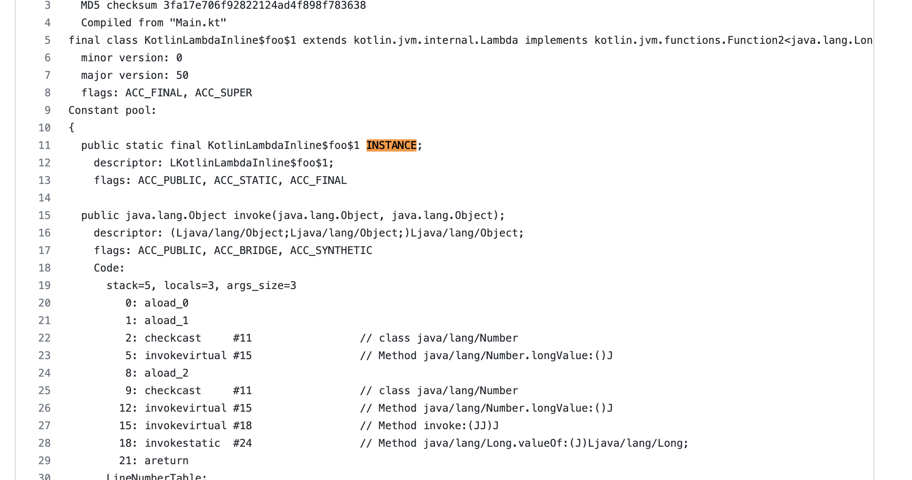

Introduction
When Kotlin compile a class with lambda inline to JVM bytecode, kotlin compiler backend will generate a INSTANCE field in generated bytecode. Such as :
import java.util.*
import kotlinx.coroutines.*
class KotlinLambdaInline {
var sink: Long = 0
fun doCalc(addfn: (a: Long, b: Long) -> Long): Long {
return addfn(123L, 456L)
}
fun foo() {
sink = doCalc { a: Long, b: Long -> a + b }
}
}
Will generate bytecode like : https://gist.github.com/lfkdsk/41fe56a59365ad73cf430c6ef94e91df

RewriteKotlinSingletonInstancePass will remove these singleton instance in some cases.
Optimization
Optimize Kotlin non-capturing Lambda · facebook/redex@1da6807 This pass will remove INSTANCE in following several conditions.
- Single use for the instance field
- Anonymous class is final
- Anonymous class has single method
- method does not have any side effects
- Anonymous class does not have any ifields This would allow subsequent passes to optimize it.
Step 1: Collect Kotlin Lambda INSTANCE Usage
Collect Kotlin noncapturing Lambda which would have an INSTANCE field of the same type and is initialized in . Collect all such Lambda. Focus on following closure :
walk::parallel::classes(scope, [&](DexClass* cls) {
if (!can_rename(cls) || !can_delete(cls)) {
return;
}
// has instance field just check field name == 'INSTANCE'
auto instance = has_instance_field(cls, m_instance);
if (!instance) {
return;
}
// another closure check cls has side effects.
if (do_not_consider_type(cls)) {
return;
}
if (concurrent_instance_map.count(instance)) {
return;
}
std::set<std::pair<IRInstruction*, DexMethod*>> insns;
concurrent_instance_map.emplace(instance, insns);
});
Check side effects:
auto iterable = cfg::InstructionIterable(*cfg);
side_effects::Summary summary(side_effects::EFF_NONE, {});
side_effects::InvokeToSummaryMap summary_map;
for (auto it = iterable.begin(); it != iterable.end(); it++) {
auto insn = it->insn;
if (insn->opcode() != OPCODE_INVOKE_DIRECT) {
continue;
}
// Check lambda-init in bytecode
if (safe_base_invoke.count(insn->get_method())) {
summary_map.emplace(insn, summary);
continue;
}
}
reaching_defs::MoveAwareFixpointIterator reaching_defs_iter(*cfg);
reaching_defs_iter.run({});
local_pointers::FixpointIterator fp_iter(*cfg);
fp_iter.run({});
auto side_effect_summary =
side_effects::SummaryBuilder(summary_map,
fp_iter,
code,
&reaching_defs_iter,
/* analyze_external_reads */ true)
.build();
return side_effect_summary.is_pure();
Step 2: Remove escaping instance
Filter out any INSTANCE that might escape and whose use we might not be able to track.
// If there is more SPUT otherthan the initial one.
if (opcode::is_an_sput(insn->opcode())) {
if (method::is_clinit(method) &&
method->get_class() == field->get_type()) {
continue;
}
// Erase if the field is written elsewhere.
concurrent_instance_map.erase(field);
continue;
}
Erase from map if this field be visited multi-times except cinit function.
Step 3: do tranformer
- Remove INSTANCE from class
if (method::is_clinit(meth)) {
cfg::ScopedCFG cfg(meth->get_code());
cfg::CFGMutation m(*cfg);
TRACE(KOTLIN_INSTANCE, 5, "%s <clinit> before\n%s", SHOW(cls),
SHOW(*cfg));
auto iterable = cfg::InstructionIterable(*cfg);
for (auto insn_it = iterable.begin(); insn_it != iterable.end();
insn_it++) {
auto insn = insn_it->insn;
if (!opcode::is_an_sput(insn->opcode()) ||
insn->get_field() != field) {
continue;
}
m.remove(insn_it);
stats.kotlin_instance_fields_removed++;
}
- Convert INSTANCE read to new instance creation
auto move_result_it = cfg->move_result_of(insn_it);
IRInstruction* new_isn = new IRInstruction(OPCODE_NEW_INSTANCE);
new_isn->set_type(cls->get_type());
IRInstruction* mov_result =
new IRInstruction(IOPCODE_MOVE_RESULT_PSEUDO_OBJECT);
mov_result->set_dest(move_result_it->insn->dest());
IRInstruction* init_isn = new IRInstruction(OPCODE_INVOKE_DIRECT);
init_isn->set_method(init)->set_srcs_size(1)->set_src(
0, move_result_it->insn->dest());
m.replace(insn_it, {new_isn, mov_result, init_isn});
m.remove(move_result_it);